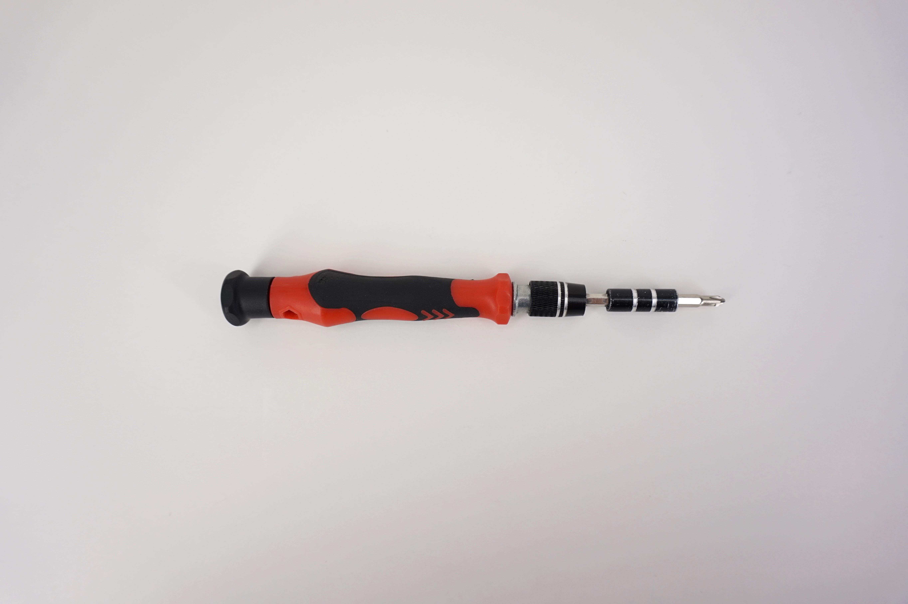
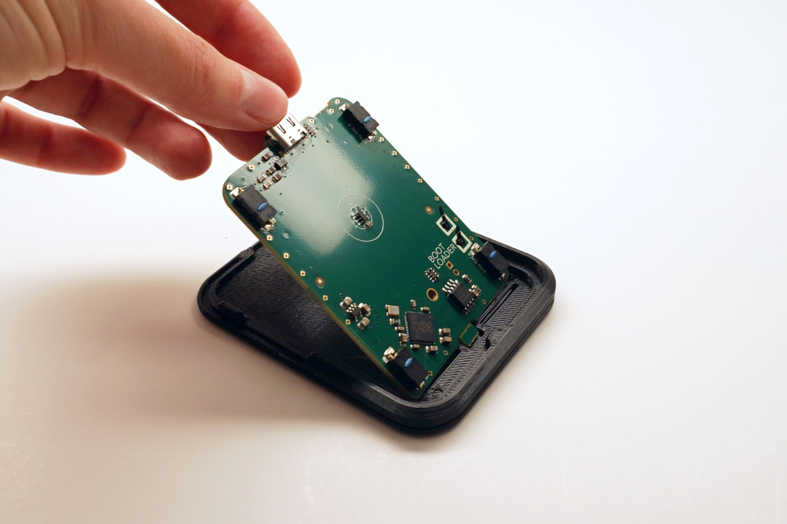
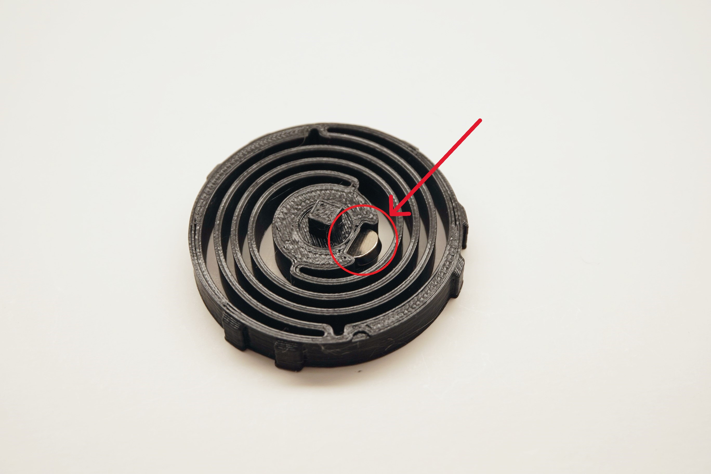
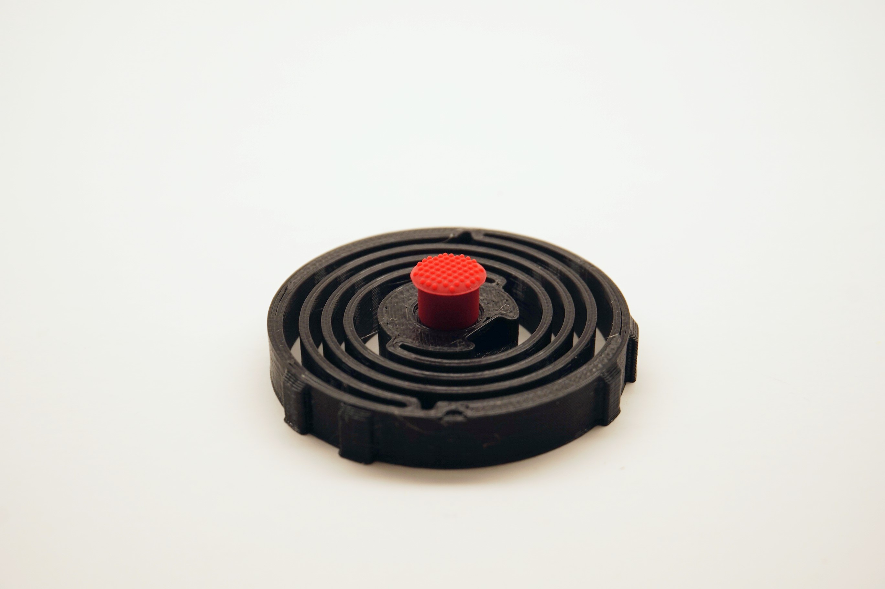
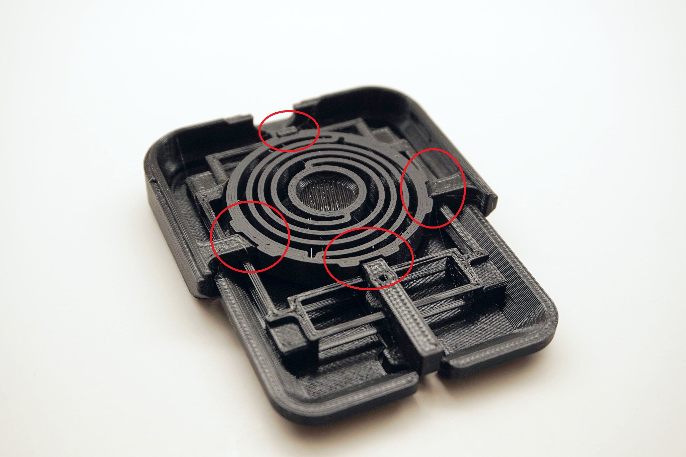
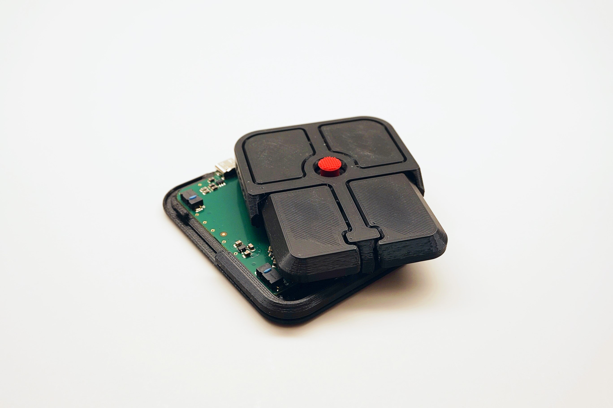
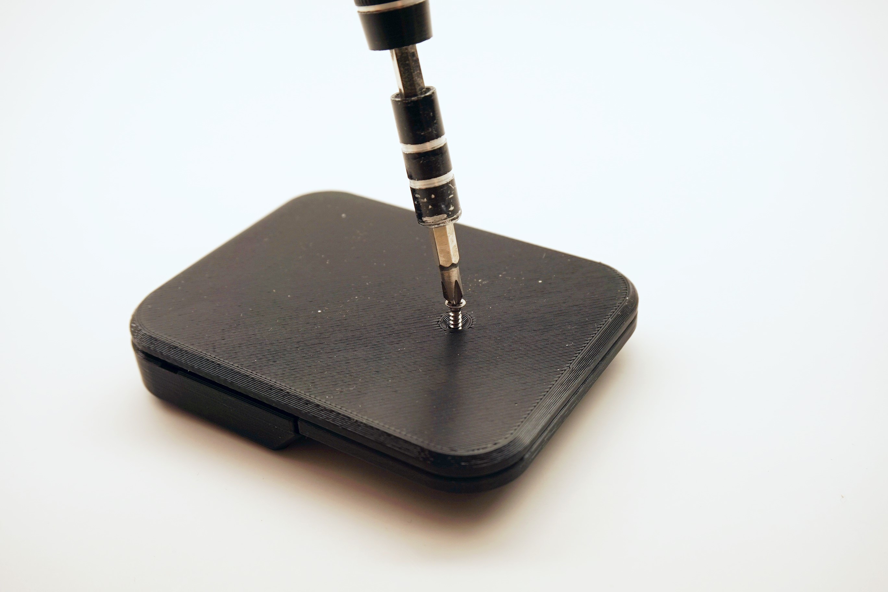
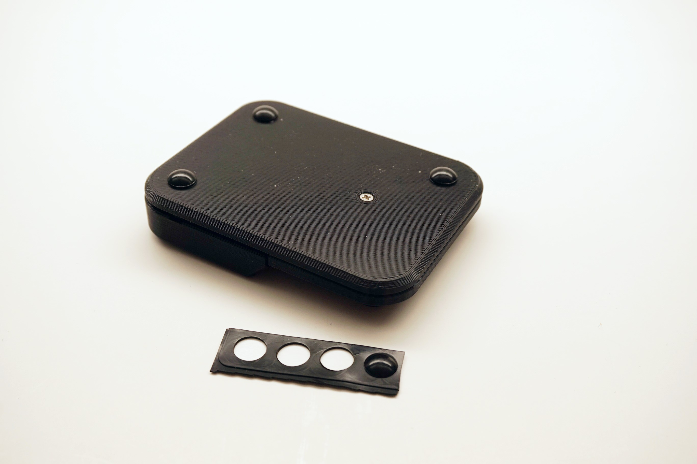
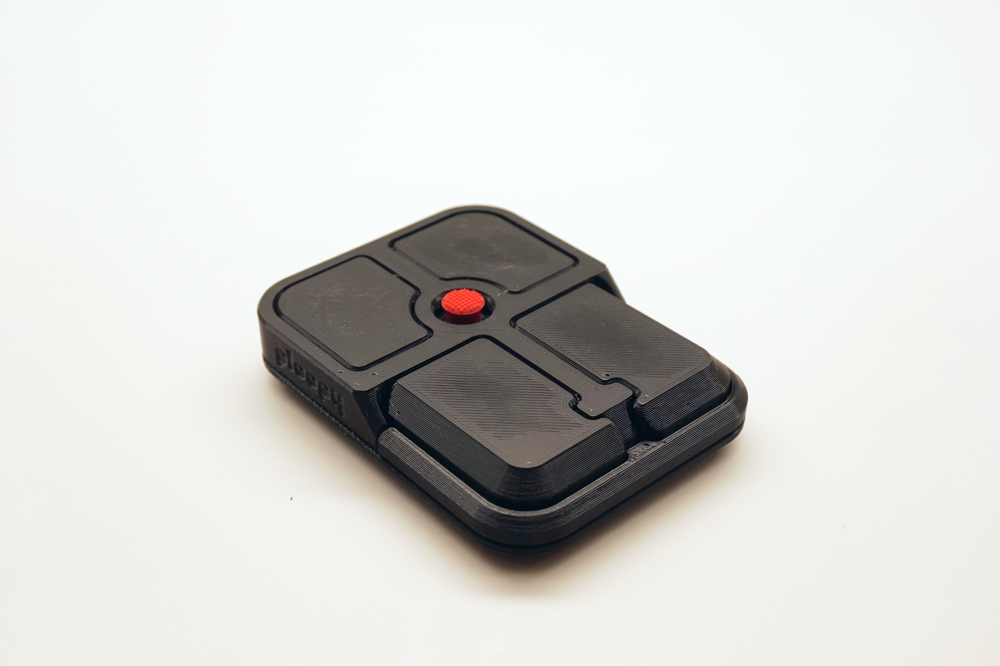

Assembly instructions
Step 1: Prepare necessary tools
- A #1 Phillips head screwdriver

Step 2: Place PCB into Base
💡
Tip: The PCB may require a bit of force to get in.

Step 3: Insert Magnet into Spring
💡
Tip: The magnet must be inserted with the north side facing upwards. Use a compass to determine the orientation of the magnet.
- The magnet requires a bit of force to fully insert.
- Once inserted, the Magnet will be very difficult to remove.

Step 4: Place Friction Nub onto Spring

Step 5: Place Spring into Top
💡
Tip: The Spring must be oriented correctly in order to properly insert. See the photo for details.

Step 6: Place Top onto Base
💡
Tip: The Top should snap into place on the Base.

Step 7: Screw Top to Base

Step 8: Place Friction Pads on Base

Step 9: All done!

Post Build Steps:
Verify the device is working correctly
- Plug the Bean into the computer using a USB-C cable
- Move the nub around, it should move the cursor
- Press each of the buttons to verify their function
ℹ️
Info: The default keymap for the Bean is here.
Check out Post Build FAQ
- Post Build FAQ
- Contains various information about things you can do after initial assembly!
ℹ️
Info: If the device is not working, consult our troubleshooting guide for further steps.